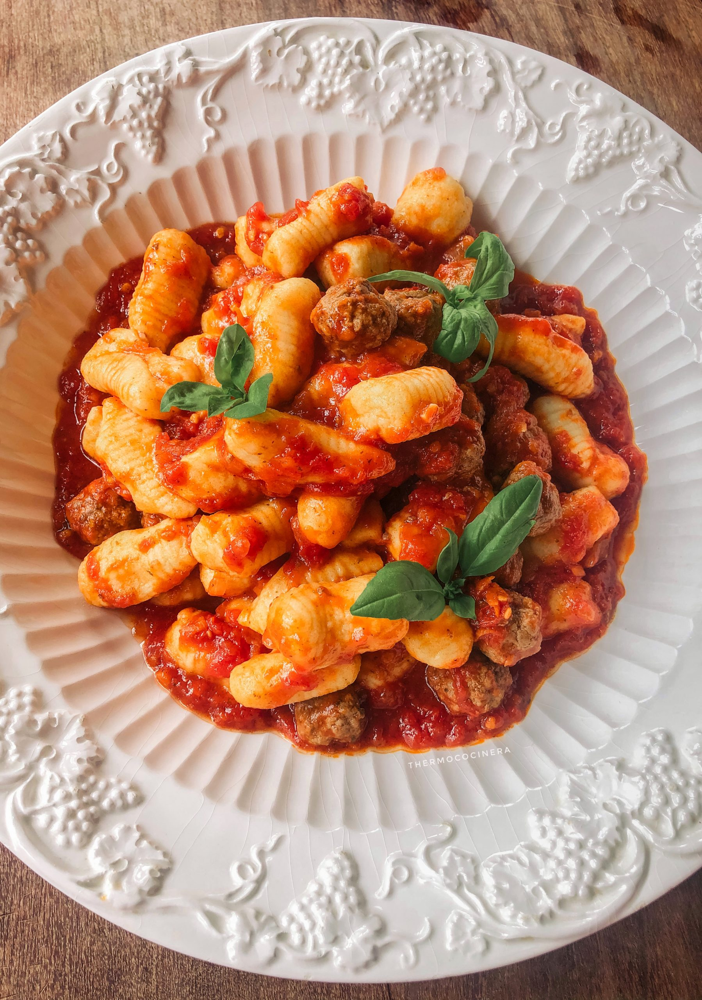

Home
gnocchi recipe

Gnocchi
A classic, easy and delicious italian pasta
Ingredients
- 1 cup dry potato flakes
- 1 cup boiling water
- 1 egg, beaten
- 1 teaspoon salt
- 1/8 teaspoon ground black pepper
- 1 1/2 cups all-purpose flour
Directions
- Place potato flakes in a medium-size bowl. Pour in boiling water; stir until blended. Let cool.
- Stir in egg, salt, and pepper. Blend in enough flour to make a fairly stiff dough. Turn dough out on a well floured board. Knead lightly.
- Divide dough in half. Shape each half into a long thin roll, the thickness of a breadstick. With a knife dipped in flour, cut into bite-size pieces.
- Place a few gnocchi in boiling water. As the gnocchi rise to the top of the pot, remove them with a slotted spoon. Repeat until all are cooked.